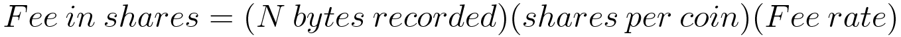

Fees and Tips
In the most ideal and simple systems, there are no fees. Assignments simply pass from one party to another and the infrastructure to support secure assignments is so trivially inexpensive that no fees are necessary. Unfortunately, with global access and large numbers of users, free systems will be abused with SPAM, DoS, and worse. Fees are one of the simplest ways to throttle abuse of free services and also get some identity history of the parties at the other end of internet connections.Recording
A recording fee is generally charged per-byte of information recorded on a blockchain. It is generally taken from the assignment in the form of a smaller total number of shares received as compared to total shares given. For the common form of shares and coins blockchain, the number of coins stays fixed while these recording fees are removed from the total number of shares outstanding, resulting in slight inflation in the number of coins owned by other secret holders. Recording fees are generally calculated as:
As the number of shares decreases, the fee in shares also decreases, but remains constant in coins. Generally, there are a very large number (like 1036) of shares to start with, fractional shares are not computed, but fractional coins are computed with very high precision and integer rational fraction repeatability.
One net result of recording fees is that typical transactions recorded on the blockchain are quite cheap to record, but if someone wants to record a large record, of many megabytes - they can do so, but it may cost them a noticeable amount of money to do so. If the average size of a record changes over time (perhaps with larger quantum ready keys), the recording fee rate like all fee rates can be adjusted as a parameter in the blockchain.
Hosting
A blockchain owner may, or may not pay a hosting fee to the owner of the official recording server(s). This hosting fee might be accepted as part of the recording fee which, instead of retiring the shares from circulation some or all of those recording fee shares are retained by the recording host. Or, the blockchain owner might pay the recording server directly, whether in shares of their blockchain, shares of another blockchain, or with entirely off-chain compensation. Whatever the arrangement, any on-chain recorded components of the hosting fee need to be spelled out clearly in the Genesis block and/or later blocks which might revise the hosting fee arrangements.As an example: Bob might sell an average of 200 BCG per month, total value roughly US$2000. Bob might have agreed to pay his hosting server US$5 per month as a hosting fee, but instead of paying it directly, he pays it as recording fees. On average, 200 BCG assignments require 200KBytes to record on the chain, so Bob and Faythe might agree on a recording fee to Faythe of 2.5 BCG per million bytes recorded.
*calculated and charged per byte on each individual assignment recorded.
Bob's customers and traders of BCG will have to pay roughly 0.0025 BCG per recorded transaction, the equivalent of 2.5 cents. Bob absorbs this fee for his customers, but traders like Quincy have to contend with the small loss every time they trade.*not bad at all for long term investment, but potentially costly for high frequency trading.
Bob could set up an additional recording fee to be taken from the shares outstanding, and let that fee inflate held shares, or not. These on-chain fees are described in the Genesis block, or any later block in the chain if/when they get revised.
Querying
A simple local Caribbean blockchain issue can attract an amazing amount of global interest, especially when it gets featured in mainstream and social media channels. One way to throttle the global flow of irrelevant traffic on the local recording servers is to charge a trivial server querying fee, in local issues. Persons with legitimate business with local servers might purchase $1 worth of small fractions of many local issues and then automatically setup accounts with the servers they need to do business with, paying perhaps nano-dollars per byte of data queried, payable in shares of the issue being queried - which is an un-noticeably small charge for legitimate users, but can become significant if the querying software operators start to tax the server with un-necessary repeated requests for full blockchain histories.Legitimate users should only have to query a blockchain once from any particular source, from that point they should keep a copy of everything they need. In the example of Bob's BCG, after 5 years of operations, 10,000 BCG redeemed by actual customers and another 90,000 BCG traded on the speculative investor markets,
*a sudden spike of trading activity can translate to a windfall in recording fees, and if hosting is paid from recording fees that means a windfall for the host.
that's 100 megabytes of blockchain record. The query fee might be set at 0.01 BCG (about ten cents) per 100 megabytes of data queried. Normal users only need to query recent records, a tiny fraction of the whole. Even legitimate chain validator or mirror operators would only need ten cents of query fees to obtain the full history of BCG, but, someone like Mal might query the whole blockchain a couple of times an hour for weeks, bogging down the server for legitimate users and serving no productive purpose whatsoever. The ten cent per copy fee is there to keep people like Mal in check, and if a trivial fee like that proves not high enough to keep crippling frivolous record queries off the servers, it can be raised until it is, and private arrangements can be made with known validators to give them free access.
Fractional coins
Assign Onward does not allow fractional shares, but the number of shares is typically so large that tiny fractions of coins are easily made, and traded for tiny fees. It will often happen that, through coin inflation and other mechanisms, share holders might end up with tiny fractions of coins that they no longer need. These can be bundled and traded with market makers in the issues, or they can be given as tips, or simply willfully expired as a distributed gift of coin inflation to remaining shareholders on the chain.Tips
Some of Bob's customers really don't like carrying cash, but they do like to tip for good service. Through fractional BCG coins*aka plates
this is quite simple... instead of directing their AOE to give Bob's AOS 1 BCG per plate of curry goat, they can enter a tip amount like 1.18 or 1.20 BCG per plate. Similarly, if they're enjoying the band at Eddies place, they can also tip the band's AOS any amount of any issues they may have.*The bands' AOS are generally setup to accept any kind of local issue, they can always exchange them for their cash value, and of course the AOE users will see equivalent cash value on their AOE assignment screen.
This way, instead of leaving with a CD that they have to pack in their luggage, they get a link to the band's website with recorded music in their AOE assignment record. Of course, anybody can pirate copy music, but this assignment record is proof of how much you tipped the band live, and when. The really sharp bands always have a recorder going so they can give the guests a link to the actual performance they were listening to when they gave the tip, as well as any similar studio recordings they may have done. Then, it's a simple .mp3 download to enjoy that music again anytime you want.
Assign Onward
3 August 2018
MIT License
Copyright (c) 2018 Assign Onward
Permission is hereby granted, free of charge, to any person obtaining a copy of this software and associated documentation files (the "Software"), to deal in the Software without restriction, including without limitation the rights to use, copy, modify, merge, publish, distribute, sublicense, and/or sell copies of the Software, and to permit persons to whom the Software is furnished to do so, subject to the following conditions:
The above copyright notice and this permission notice shall be included in all copies or substantial portions of the Software.
THE SOFTWARE IS PROVIDED "AS IS", WITHOUT WARRANTY OF ANY KIND, EXPRESS OR IMPLIED, INCLUDING BUT NOT LIMITED TO THE WARRANTIES OF MERCHANTABILITY, FITNESS FOR A PARTICULAR PURPOSE AND NONINFRINGEMENT. IN NO EVENT SHALL THE AUTHORS OR COPYRIGHT HOLDERS BE LIABLE FOR ANY CLAIM, DAMAGES OR OTHER LIABILITY, WHETHER IN AN ACTION OF CONTRACT, TORT OR OTHERWISE, ARISING FROM, OUT OF OR IN CONNECTION WITH THE SOFTWARE OR THE USE OR OTHER DEALINGS IN THE SOFTWARE.
Copyright (c) 2018 Assign Onward
Permission is hereby granted, free of charge, to any person obtaining a copy of this software and associated documentation files (the "Software"), to deal in the Software without restriction, including without limitation the rights to use, copy, modify, merge, publish, distribute, sublicense, and/or sell copies of the Software, and to permit persons to whom the Software is furnished to do so, subject to the following conditions:
The above copyright notice and this permission notice shall be included in all copies or substantial portions of the Software.
THE SOFTWARE IS PROVIDED "AS IS", WITHOUT WARRANTY OF ANY KIND, EXPRESS OR IMPLIED, INCLUDING BUT NOT LIMITED TO THE WARRANTIES OF MERCHANTABILITY, FITNESS FOR A PARTICULAR PURPOSE AND NONINFRINGEMENT. IN NO EVENT SHALL THE AUTHORS OR COPYRIGHT HOLDERS BE LIABLE FOR ANY CLAIM, DAMAGES OR OTHER LIABILITY, WHETHER IN AN ACTION OF CONTRACT, TORT OR OTHERWISE, ARISING FROM, OUT OF OR IN CONNECTION WITH THE SOFTWARE OR THE USE OR OTHER DEALINGS IN THE SOFTWARE.